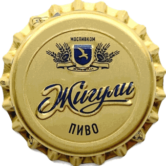
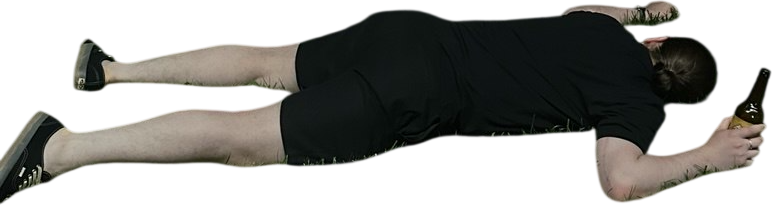

Анекдот от Тёмки
{{ joke }}
{{ guestGreeting }}
У Сони день рождения,
мы оба не приглашены.
Но я приглашаю тебя
пить пиво.
наклони телефон
Когда
суббота, 5 сентября
Во сколько
18:00
Че куда пойдем?
Два маленьких вопроса, чтобы все прошло великолепно!
01
Куда пойдем?
Бары разные — ткни какие по кайфу. Можно отметить несколько.
02
Что пьём?
Что брать именно тебе. Можно отметить несколько.
Ну и пиздани что-нибудь по желанию
Листок оторвётся и улетит ко мне.
Блокнот
Гомик
{{ notesLabel }}

Забились!
Нажми, чтоб я знал, что ты в деле.

Не жду!

А я жду!